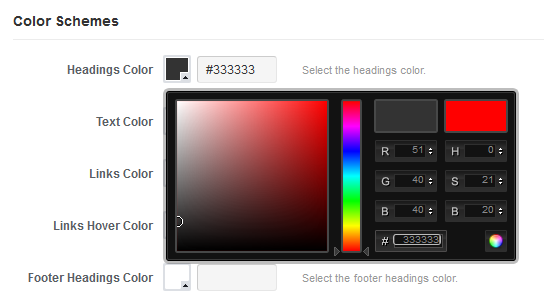

This document covers the installation and use of this theme.
Thank you for purchasing my theme, I truly appreciate it! If you have any questions that are beyond the scope of this help file, please feel free to post your questions on the support forums, we will be happy to help you.
To install this theme you must have a working version of WordPress already installed. This installation guide will help you to install the WordPress.
The theme files can be uploaded in two ways: Through FTP or through WordPress dashboard.
Using your FTP program, upload the non-zipped theme folder into the /wp-content/themes/ folder on your server..
Navigate to Appearance → Add New Themes → Upload. Go to browse, and select the zipped theme folder. Hit Install Now and the theme will be uploaded and installed.
Once the theme is uploaded, you need to activate it. Navigate to Appearance > Themes and activate the theme.
You can either specify the full path to images which you want to use for the logo, favicon etc, or you can upload the images through the option panel.
Here is how you can upload the images
Step 1: Click the Upload button next to the image field.
Step 2: A pop up window will appear, click on the Select Files button.
Step 3: Select the image you want to upload and click Open.
Step 4: Once the image is uploaded. Write the title for the image, and click on Insert into Post.
Step 5:That's all. The upload box should close automatically and you should see the URL of the uploaded image in the input field. Remember to Save the settings.
You can fully customize your homepage using the homepage settings. You can enable or disable top header bar, spotlight, carousel, slider and the featured categories. If you want to disable any of these, simply uncheck its box.
You can enable or disable the author information, related posts and social media links for the posts and pages. You can also enable or disable the comments on pages. You can enable or disable post meta, comments and social media links on a single image page. The post archive settings include the category, tag description and author information.
In this section, you can change the theme color schemes and add custom CSS code.
You can select the primary color for the theme and colors for each feature category on homepage.
The theme has additional features to customize style by adding custom CSS in the options panel. You can use enter your CSS code in the custom CSS field. It will overwrite the default style of the theme.
You can select the custom typography for the headings and the text. You can set the font size, font style, font margin and line height for the headings and the text.
This theme allows you to use 500+ Google web fonts. You can see select the font name from the list.

Our themes have been developed with the best SEO practices in mind. The theme features semantic & valid HTML which makes it easy for search engines to index the content of your site.
The theme has been structured to ensure that important content always has precedent over less important content, and heading tags have been used in accordance with guidelines.
Once you've verified your ownership of your site with Google, you'll be able to:
This theme has option to verify your site with Google without changing anything in the source code. You simply need to get the Google site verification code and put it in the theme options.
Here is the detailed information on how to get the Google site verification code.
Step 1: Go to Google webmaster tools and login using your Google account.
Step 2: After you have logged in, click the Add a Site button for the relevant site.
Step 3: Enter your site URL and click Continue.
Step 4: Copy the verification code which is inside the content= " ".
Step 5: Paste the verification code in theme options. Save the theme options and click Verify.
With Bing™ now powering Yahoo! and Facebook search, nearly 30 percent of all Web traffic is delivered through Bing™. Because of this, it is more important than ever for website owners to ensure their Websites are indexed in Bing™.
Bing™ Webmaster Tools allow you to submit and verify your Website for indexing. Once it is verified, you can also use Bing™ Webmaster Tools to improve your Website's SEO and view important data on its performance.
With this theme, you can verify your site with Bing™ very easily without changing anything in the source code. You simply need to get the Bing™ verification code and put it in the theme options.
Here is the detailed information on how to get the Bing™ verification code..
Step 1: Sign in the Bing Webmaster Tools. using your Windows Live ID.
Step 2: After you have logged in, you will be prompted to enter the full URL of your web site. Enter the address and click Add.
Step 3: Add information about your site and click Add.
Step 4: After you have added the site, you can see Verify Now on your homepage. Click it.
Step 5: You can find the Bing Verification ID in the Option 2, as shown below.
Step 6: After you have entered this ID in the theme option and saved settings, return to the Bing Webmaster tools and click on Verify.
You can place the header ad code to display ad in the header. You need to put full HTML code for the ad. The field has an example ad code. If you do not wish to display any ad in the header, you can remove the default code from the field. You can also add any other code you wish to use in the head section of your website.
The footer settings include the text in the footer, and any other code which you wish to place at the bottom of the website.
If you want to reset an individual option value, you can simply leave it blank. If you wish to reset all settings, you can do that by pressing Reset Defaults button.
This theme comes with 22 custom widgets that you can use in your sidebar or footer. These widgets can be found under Appearance → Widgets and you can customize them however you like.
This widget allows you to configure and display your latest posts with metro style tiles. Set the title, and number of entries to display. If you want to display specific categories, you can enter the category ids separated with a comma.
This widget allows you to configure and display the popular posts with numbers. Set the title, and number of entries to display. If you want to display specific categories, you can enter the category ids separated with a comma.
You can display any video by pasting the video embedding code in this widget. When you get the embedding code for the video, make sure to set the proper video size.
You can display latest tweets with this widget with the slider. Just enter your twitter username (for example wellthemes). You will also need to enter the new Twitter API details.
Here's how you can get the Twitter API keys
With this Powerful widget, you can display the Facebook likebox. This widget has multiple configuration options. You can change the width and color scheme. Also you can enable or disable faces, stream and likebox header. Just enter the Full Facebook page URL.
With this Powerful widget, you can display the Google+ profile badge. Just enter the Full Google+ profile URL.
This widget allows you to display your social profile links on your website. You can display Twitter, Facebook, Google+, RSS and Contact Page links.
This widget allows you to display a block of 4 ads of 105x105px. Just enter the ad image and link URLs in the widget.
This widget allows you to display a single ad 220px size. Just enter the ad image and link URL in the widget.
This widget displays your Facebook and Twitter.
This is a very powerful widget, which is built by keeping the API restrictions in mind. This widget requests the API, and stores the subscriber count in the database for a specific time in order to avoid making unnecessary API calls.
You need to enter twitter and Facebook ID (not the complete URL).
You can use Facebook Graph API to find your ID. Just type this in your browser's address bar : https://graph.facebook.com/your-username and hit enter. You will get the details in JSON format. Here you can find the ID in the first line, for example: "id": "1234567890".
You will need to enter Twitter API keys, please see above how to get API keys.
You can display the Flickr photo stream with this widget. You can select how many images you want to display. Just enter the Flickr user ID in the widget. There is a link in the widget which helps you to find your Flickr ID by providing your username.
Instead of linking your images to the Flickr, this widget displays the images on your own site using the lightbox. Also, Flickr API is known to respond slow often, therefore a custom class has been used to make sure that your site loads fast.
This widget allows you to add a quick contact form powered with jQuery. The basic form validation is done with the jQuery. It’s a compact form and does not include captcha.
This widget displays the carousel slider posts in the sidebar. You can either display categories from all posts, or you can select a specific category. Also, you can select the number of posts.
This widget displays the recent tags with the post count. You can select how many tags you want to display.
This widget displays the recent posts with the date and number of comments. It has longer title length and does not include the featured post thumbnails.
This widget displays the recent pins from Pinterest. You just need to supply the pinterest username. You can select number of pins you want to display. You can display recent pins from all boards or select a specific board.
This widget displays Feedburner RSS Email Subscription Form. Just enter the Feedburner ID.
This widget displays the recent comments with the user avatars. You can select the number of comments you want to display.
You can use this widget to display the weather forecast. The location parameter needs to be a WOEID.
To find your WOEID, browse or search for your city from the Yahoo Weather home page (http://weather.yahoo.com/). The WOEID is in the URL for the forecast page for that city. You can also get the WOEID by entering your zip code on the home page of Yahoo weather.
For example, if you search for Los Angeles on the Weather home page, the forecast page for that city is http://weather.yahoo.com/united-states/california/los-angeles-2442047/. The WOEID is 2442047.
This widget displays the recent posts from your Facebook. You need to provide the Facebook ID. You can read above how to get the Facebook ID.
You also need to provide a Facebook App ID and App secret code. Its very easy to get that. Just g
This theme is integrated with the very powerful open source WP-Polls plugin, which allows you to use polls widget in the theme sidebar. You will find the plugin in the theme package. Here is how you can use this widget
The theme comes pre-packed with a number of shortcodes allowing you to add styled content to your site with little effort.
Conveniently, the available shortcodes have been included in a one-click WYSIWUG menu. When creating a page or post, click the star options icon to reveal a list of shortcodes.
The general template structure is the same throughout the template. Here is the general structure.
The message box shortcodes allow you to include passages of text styled with different background colors and icons. These could be used as alerts, warnings, notifications etc.
The shortcode for the message box is
[box style='doc'] Content goes here... [/box]
You can also specify the width of the box by using an option parameter width. You can define the box width in pixels or percentage. For example
[box style='doc' width=’50px’] Content goes here... [/box]
or
[box style='doc' width=’50%’] Content goes here... [/box]
The button shortcodes allows you to insert a button into your content that can be linked to the destination URL of your choice.
By default the button shortcode is
[button url='#' size='small' style='black'] Button text... [/button]
But you can use other optional parameters for the button shortcodes. For example you can add id, title and target. The id and title can be anything. The target parameter is same as HTML link target Attribute, so you can use following values for the target
| Parameter | Description |
|---|---|
_blank or new |
Opens the link in a new window |
_self |
Opens the link in the same frame as it was clicked. |
_parent |
Opens the link in the parent frameset. |
_top |
Open link in the full body of the window. |
So the button shortcode can be extended with the additional parameters to:
[button url='#' size='small' style='blue' id='123' title='A button title' target='new'] Button text... [/button]
The highlight shortcode allows you to highlight text. You can use predefined colors to highlight the text.
[highlight style='alice-blue'] Content goes here... [/highlight]
This shortcode allows you to use different list styles.
The lists shortcode is
[list style='arrow'] [list_item] Item 1... [/list_item] [list_item] Item 2... [/list_item] [/list]
You can add social sharing links with custom settings anywhere with the social shortcode.
The default shortcode for the Facebook button is
[facebook]
You can use following optional parameters for the facebook shortcode:
| Parameter | Value |
|---|---|
layout |
box_count, standard, button_count |
width |
Numeric value |
height |
Numeric value |
show_faces |
true or false |
font |
lucida+grande, arial, Tahoma or verdana |
colorscheme |
light or dark |
So you can use the shortcode as
[facebook layout='box_count' colorscheme='dark']
The default Google+ shortcode is
[gplus]
You can use following optional parameters for the Google+ shortcode:
| Parameter | Value |
|---|---|
size |
small, medium, standard, tall |
lang |
en-Us or other available language codes. |
You can find all language codes here.
So, we can use the google shortcode as
[gplus size='tall' lang='pt-BR']
The default Twitter shortcode is
[twitter]
You can use following optional parameters for the Twitter shortcode:
| Parameter | Value |
|---|---|
layout |
none, horizontal, vertical |
username |
Screen name of the user to attribute the tweet to |
text |
Default Tweet text |
url |
URL of the page to share |
related |
Related accounts |
lang |
The language for the tweet button |
So we can use the twitter shortcode as
[twitter layout='horizontal' lang='es']
The default Linkedin shortcode is
[linkedin]
You can use following optional parameters for the Linkedin shortcode:
| Parameter | Value |
|---|---|
layout |
1, 2, 3 |
url |
URL of the page to share |
For example
[linkedin layout='1']
The default StumbeUpon shortcode is
[stumbleupon]
You can use following optional parameters for the StumbleUpon shortcode:
| Parameter | Value |
|---|---|
layout |
1, 2, 3, 4, 5, 6 |
url |
URL of the page to share |
For example
[stumbleupon layout='3' url='wellthemes.com']
The default Digg shortcode is
[digg]
You can use following optional parameters for the Digg shortcode:
| Parameter | Value |
|---|---|
layout |
DiggCompact, DiggCompact, DiggMedium |
url |
URL of the page to share |
For example
[digg layout='DiggCompact' url='wellthemes.com']
You can add videos from Youtube and Vimeo by providing the video ID in the shortcode.
The default Youtube shortcode is:
[video type='youtube' id='j0lSpNtjPM8' width='500' height='300' /]
The default Vimeo shortcode is
[video type='vimeo' id='23281150' width='500' height='300' /]
You can use following optional parameters for the video shortcode:
| Parameter | Value |
|---|---|
width |
Numeric value |
height |
Numeric value |
align |
center, left or right |
For example:
[video type='youtube' id='j0lSpNtjPM8' width='500' height='300' align='left' /]
The Drop Cap shortcode increases the size of the first letter of a paragraph and then reinserts the letter so that it aligns with the first line of text.
The theme has different styles of shortcodes. For example the shortcode for the round dropcap is
[dropcap style='round']A[/dropcap]
The lightbox images shortcode allows you to add images which open in the lightbox.
The default lightbox image shortcode is
[lightbox_image src='' bigimage='' title='Image']
here is the description of above shortcode parameters
| Parameter | Description |
|---|---|
src |
Source for the image thumbnail |
bigimage |
Link to the full size image |
title |
Image title |
You can also use following optional parameters for the lightbox image shortcode.
| Parameter | Value |
|---|---|
align |
center, left or right |
alt |
Image ALT text |
For example
[lightbox_image src='' bigimage='' title='Image' align='right' alt='Alt Text']
Here's a list of the stylesheet files being used in this theme:
| File Name | Description |
|---|---|
style.css |
Contains the theme styles. |
css/reset.css |
Many browsers interpret the default behavior of html elements differently. The reset stylesheet is used to reduce browser inconsistencies in things like default line heights, margins and font sizes of headings, and so on. |
css/common.css |
Contains styles for the common WordPress elements. |
css/shortcodes.css |
Contains styles for the shortcodes. |
css/lightbox.css |
Contains styles for the lightbox. |
You need to set post featured image to display in the featured categories, slider and archives etc. You can find the 'Featured Image' metabox on the on the New/Edit Post and Page screens. If it isn't, make sure 'Featured Image' is enabled in the screen options on the top right.
Here are the detailed steps on how to set a featured image for the post.
Once again, thank you so much for purchasing this theme. As I said at the beginning, I'd be glad to help you if you have any questions relating to this theme. No guarantees, but I'll do my best to assist. If you have a more general question relating to the themes on ThemeForest, you might consider visiting the forums and asking your question in the "Item Discussion" section.